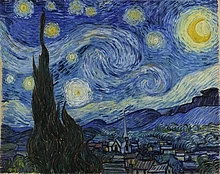
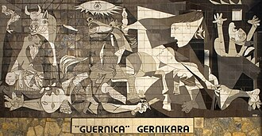
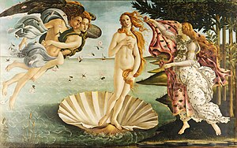

Pinturas
Mona Lisa

La "Mona Lisa", pintada por Leonardo da Vinci en el Renacimiento, es mucho más que un retrato. Su enigmática sonrisa y mirada misteriosa han fascinado al mundo durante siglos. Esta obra maestra es un estudio de la belleza femenina y una muestra del talento incomparable de su creador. Con su fama legendaria, La Mona Lisa sigue cautivando a millones de personas en el Louvre, donde se exhibe con reverencia como una joya del patrimonio cultural mundial.
La última cena

"La Última Cena", pintada por Leonardo da Vinci, es una obra maestra que retrata el momento en que Jesús comparte su última comida con sus discípulos. La disposición de los personajes y las expresiones faciales transmiten la intensidad del momento. Esta obra sigue siendo admirada por su belleza estética y su impacto cultural, recordándonos la profundidad del arte religioso occidental.
Noche estrellada
La "Noche Estrellada", de Vincent van Gogh, es un ícono del arte postimpresionista. Pintada en 1889, esta obra maestra evoca una sensación de asombro con su representación vibrante del cielo nocturno sobre un tranquilo pueblo francés. Con pinceladas audaces y colores intensos, Van Gogh captura la belleza del universo y nos recuerda la capacidad del arte para transmitir emociones profundas.
El grito

"El Grito" de Edvard Munch, creado en 1893, es un ícono del expresionismo. Con colores vibrantes y pinceladas audaces, Munch retrata una figura angustiada que parece gritar en desesperación. Esta obra maestra captura la esencia del tormento humano de manera inolvidable, resonando con el espectador a través de los años.
Guernica
"Guernica" es la obra maestra de Picasso, una denuncia contra la brutalidad de la guerra. Pintada en 1937, representa el bombardeo de la ciudad vasca de Guernica durante la Guerra Civil Española. Con colores sombríos y formas distorsionadas, captura el caos y la angustia, convirtiéndose en un símbolo perdurable de paz y resistencia.
El beso

"El Beso", de Gustav Klimt, es una obra maestra del Art Nouveau que representa la pasión y la conexión entre dos amantes. Pintada entre 1907 y 1908, muestra a una pareja en un abrazo apasionado, rodeada de motivos ornamentales y tonos dorados característicos del estilo de Klimt. Esta pintura es tanto un símbolo del amor humano como una expresión artística de belleza y sensualidad que ha cautivado a espectadores de todo el mundo.
La joven de la perla

"La Joven de la Perla", pintada por Johannes Vermeer en el siglo XVII, es una obra maestra que cautiva con su enigmática belleza. La joven retratada, con un turbante y una perla en la oreja, transmite un aura de misterio y elegancia. La técnica magistral de Vermeer en la captura de la luz y los detalles hace de esta pintura una pieza icónica del arte holandés del Siglo de Oro.
El nacimineto de Venus
"El Nacimiento de Venus" de Sandro Botticelli, pintado en el siglo XV, es una obra maestra del Renacimiento italiano. En esta pintura, Venus emerge grácilmente de una concha marina, rodeada por ninfas y dioses marinos. Con una paleta de colores suaves y una composición elegante, Botticelli captura la belleza idealizada de la diosa del amor. Esta obra sigue siendo admirada por su gracia y su representación de la mitología clásica.
Las Meninas

"Las Meninas" de Diego Velázquez es una obra maestra del siglo XVII que retrata a la infanta Margarita rodeada por su séquito en la corte española. Velázquez desafía las convenciones al incluir su propia imagen en el lienzo, creando una intrigante interacción entre los personajes y desafiando la percepción del espacio y la realidad. Esta pintura es admirada por su maestría en el uso de la luz y la sombra, así como por su reflexión sobre el papel del arte y el artista en la sociedad.
La creación de Adán

"La Creación de Adán" de Miguel Ángel, pintada en el techo de la Capilla Sixtina, es una obra maestra renacentista que representa el momento en que Dios da vida a Adán. La intensidad y la majestuosidad de este acto trascendental se capturan con una composición dinámica y una técnica magistral. Esta obra icónica es una poderosa expresión de la conexión entre lo divino y lo humano, y sigue siendo admirada por su belleza y su significado espiritual.